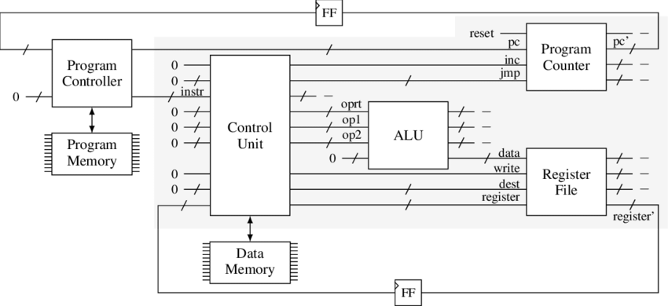
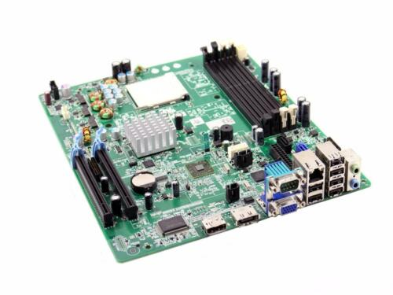
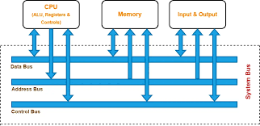
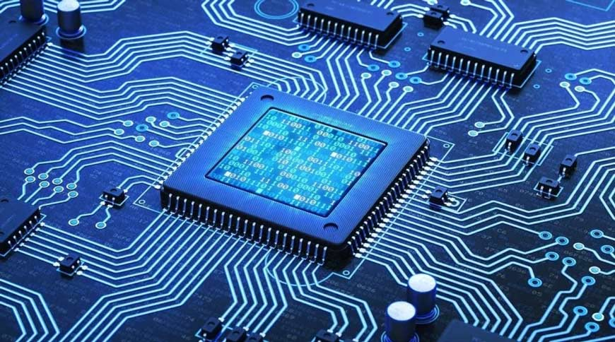
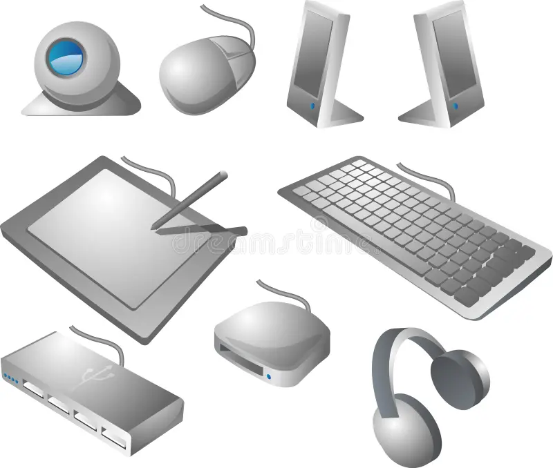

Een processor is een essentieel onderdeel van een computer en wordt ook wel de centrale verwerkings-eenheid genoemd (of CPU). Het is het brein van de computer en is verantwoordelijk voor alle berekeningen en aansturingen die in een computer plaatsvinden. Hoe sneller een processor is, hoe meer berekeningen en aansturingen er per seconde kunnen worden verwerkt. De snelheid van een processor wordt uitgedrukt in kloksnelheid (GHz), die aangeeft hoe vaak de processor een berekening of aansturing per seconde kan uitvoeren.
Een processor kan bestaan uit meerdere processorkernen (cores) die tegelijkertijd kunnen werken. Hoe meer processorkernen een processor heeft, hoe sneller deze taken kan uitvoeren. Een Dual Core-processor heeft bijvoorbeeld twee processorkernen, een Quad Core-processor heeft er vier en een Hexa Core-processor heeft er zes.
De ALU (Arithmetic Logic Unit) is het centrale onderdeel van de processor dat rekenkundige en logische bewerkingen uitvoert. Het voert rekenkundige bewerkingen zoals optellen, aftrekken, vermenigvuldigen en delen uit.
De control unit is een component van de CPU die de werking van de processor aanstuurt. Het zet gecodeerde instructies om in timing- en besturingssignalen die de werking van andere eenheden zoals het geheugen, ALU (Arithmetic Logic Unit) en invoer- en uitvoereenheden regelen.
Een moederbord is een essentieel onderdeel van een computer. Het is een printplaat waarop andere (insteek-)printplaten kunnen worden gemonteerd. Het moederbord voorziet alle componenten van stroom en laat deze met elkaar communiceren. Het bevat de centrale processor (ook wel CPU genoemd) die bepaalt hoe snel je PC informatie kan verwerken. Andere onderdelen zoals het werkgeheugen, geluidskaart, videokaart en nog veel meer zijn ook aangesloten op het moederbord. Kortom, het moederbord vormt het kloppend hart van je computer, het zorgt ervoor dat alle componenten met elkaar kunnen communiceren.
Een BUS is een gemeenschappelijk transportmedium voor elektronische signalen. Het doel van een bus is om het aantal verbindingen tussen verschillende schakelingen te verminderen. In de computertechniek wordt een bus gebruikt om verschillende onderdelen van een computer met elkaar te verbinden, zoals binnenin een geïntegreerde schakeling, op een printplaat, tussen printplaten of tussen systemen.
Neem bijvoorbeeld een microprocessor, dit onderdeel communiceert met het geheugen via de bus. Deze bus bestaat uit een adresbus, een databus en een controlebus. De adresbus transporteert informatie over welk geheugenelement moet worden bereikt, de databus transporteert de daadwerkelijke gegevens die en de besturingsbus geeft aan welke actie moet worden uitgevoerd.
Permanent geheugen is een type computergeheugen dat de opgeslagen gegevens kan bewaren, ongeacht of de computer is in- of uitgeschakeld. Het wordt meestal gebruikt voor secundair geheugen of langetermijnopslag. Voorbeelden van niet-vluchtig geheugen zijn een solid state drive (SSD) en een harde schijf. De gegevens in het BIOS en het CMOS-geheugen van het moederbord blijven bewaard wanneer de computer wordt uitgeschakeld, doordat dit geheugen door een batterij op het moederbord wordt gevoed.
Het intern geheugen van een computer, ook wel Random Access Memory (RAM) of werkgeheugen genoemd, is een essentieel onderdeel van een computer waarin tijdelijke bestanden worden bewaard terwijl processen worden uitgevoerd.
Er zijn enkele belangrijke verschillen tussen intern geheugen en extern geheugen. Ten eerste gaan gegevens die in het intern geheugen zijn opgeslagen verloren zodra de computer wordt uitgezet. Extern geheugen daarentegen houdt opgeslagen gegevens altijd vast, ongeacht of de computer op stroom is aangesloten of niet. Moderne pc’s hebben echter een slaapstand waarbij de pc voor het oog uit staat, maar er nog steeds stroom op het interne geheugen staat. Hierdoor blijven de gegevens behouden en kan je direct weer verdergaan waar je mee bezig was zodra de pc niet meer in slaapstand staat.
Het intern geheugen van een computer kan worden beschouwd als het werkgebied van de computer, waarin tijdelijke bestanden (zoals het open hebben staan van je browser) worden opgeslagen tijdens processen. Hoe meer RAM-geheugen beschikbaar is, hoe meer processen tegelijkertijd kunnen worden uitgevoerd.
Kabels binnen een pc vervullen verschillende functies en zorgen voor de verbinding tussen verschillende computeronderdelen, randapparatuur en externe apparaten. Hier zijn enkele veel voorkomende kabels die je in een pc kunt vinden:
1. Stroomkabel: Deze kabel voorziet de pc van elektriciteit.
2. Internetkabel: Dit is vaak een ethernetkabel die ervoor zorgt dat de computer snel en stabiel internet heeft.
3. USB-kabels: USB-kabels worden gebruikt om verschillende apparaten aan te sluiten, zoals printers, scanners, externe harde schijven, smartphones en andere randapparatuur.
Een interface is een koppelvlak waarmee twee systemen met elkaar communiceren. Het kan worden gebruikt om de communicatie tussen verschillende componenten van een applicatie of systeem te definiëren.
Een interface zorgt ervoor dat de communicatie van een mens wordt omgezet in een taal die de computer begrijpt en vice versa. Het kan ook worden gebruikt om de communicatie tussen twee computeronderdelen makkelijker te maken. Buiten de computerwereld zijn interfaces overal te vinden, zoals de afstandsbediening van een televisietoestel of het beeldscherm van je laptop.
Een system on a chip (SoC) is een geïntegreerde schakeling die de meeste of alle componenten van een computer of ander elektronisch systeem bevat. Deze componenten omvatten bijna altijd een centrale verwerkingseenheid (processor), geheugeninterfaces, invoer/uitvoerapparaten en -interfaces, en interfaces voor secundaire opslag, vaak samen met andere componenten- allemaal op een microchip. SoCs worden vaak gecombineerd met aparte geheugen- en secundaire opslagchips die fysiek gescheiden zijn van de SoC.
Het belangrijkste verschil tussen een computer met een system on a chip en een computer met een moederbord is dat de SoC alle componenten in één geïntegreerde schakeling bevat, terwijl het moederbord deze modules als afzonderlijke componenten of uitbreidingskaarten verbindt. Dit betekent dat SoCs over het algemeen betere prestaties leveren en minder energie verbruiken dan traditionele pc’s met vergelijkbare functionaliteit.
Randapparatuur is een verzamelnaam voor apparaten die een onderdeel vormen van een computernetwerk of, maar niet noodzakelijk zijn om de computer te laten werken. In de context van computers verwijst het naar hardware die niet behoort tot de centrale rekeneenheid, maar ‘ernaast’ wordt gebruikt om de computer geschikt te maken voor een bepaalde taak. Randapparatuur kan bestaan uit apparaten zoals beeldschermen, muizen, toetsenborden, printers en webcams.

Gemaakt door: Joris Peters
Vragen of opmerkingen? Klik dan op deze link om in contact met mij te komen!